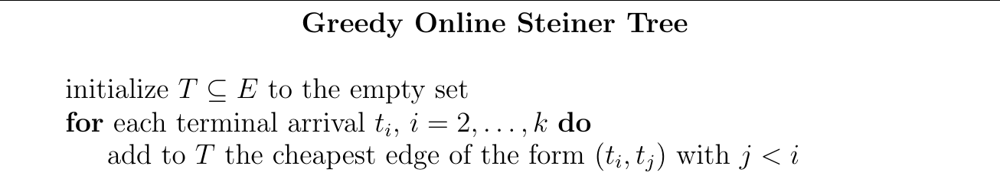
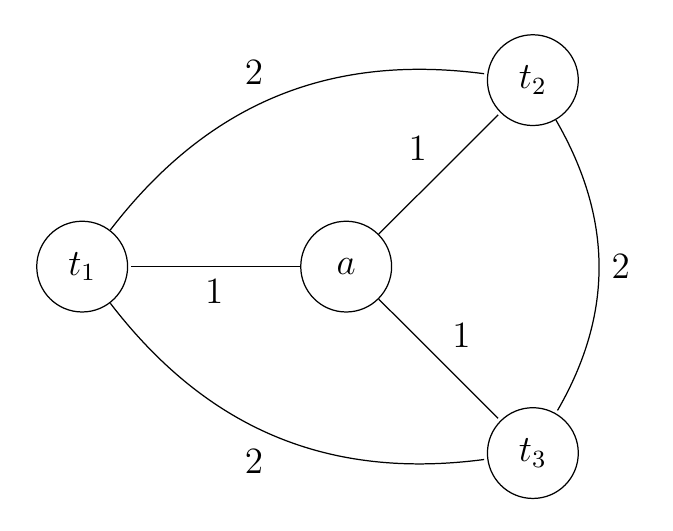
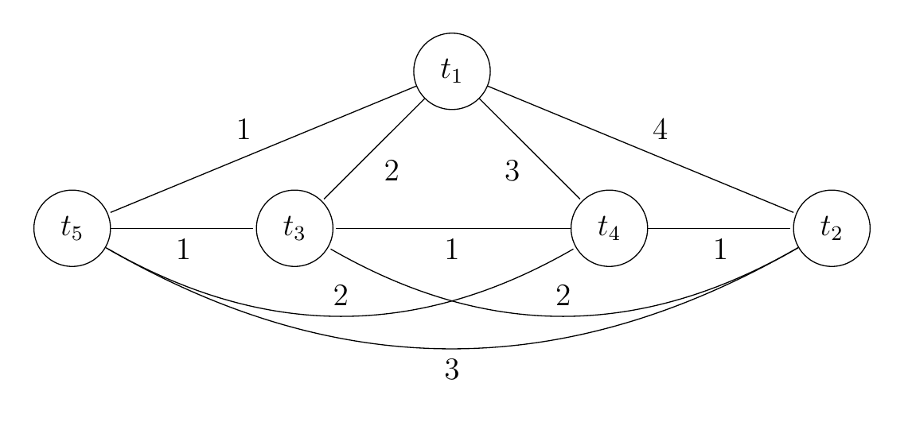
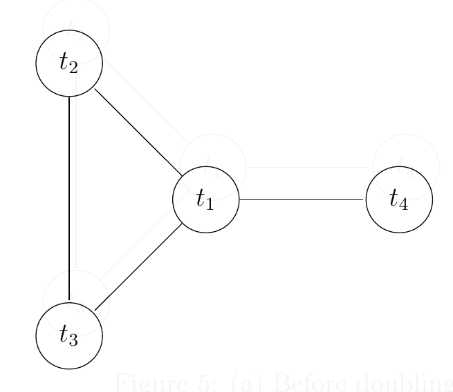
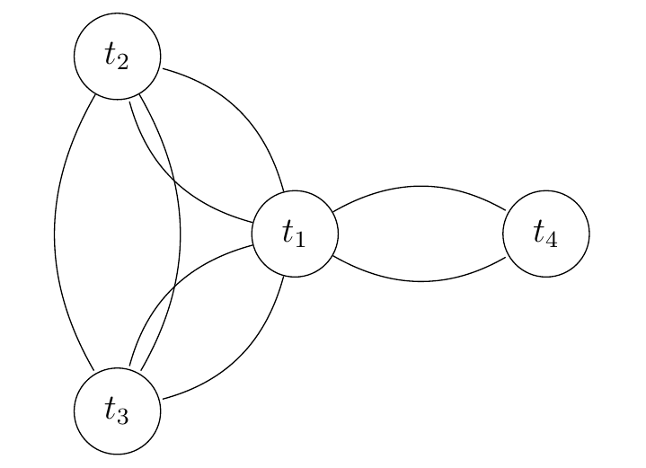

问题求解（三） Open Topic 13 笔记
OT：除IP外，广义的“松弛-修正”思想还可用于解决其它问题，例如TSP的松弛修正算法、最短超串问题的松弛修正算法等，请调研至少2种算法（其中至多1种来自上述例子），结合例子介绍算法的设计与分析，重点阐述其中的“松弛-修正”思想。
欧拉图在松弛修正算法中的应用
Introduction
在某些松弛修正算法的分析中，欧拉图经常出现。本次报告选择了以下两个主题：
- 在线斯坦纳树的贪心算法
- Metric TSP 的启发式算法。包括 MST Heuristic 算法和改进的 Christofides 算法。
在线斯坦纳树
Description
- 提前给定：连通无向图 \(G=\langle V, E\rangle\)，非负权。
- 在线回答：依次给定 \(t_1, t_2, \cdots, t_k\)，在给定 \(t_i(1\le i\le k)\) 后将其增量连接到 \(i-1\) 时构造的子图。要求使得在 \(k\) 次迭代后的子图边权和尽量小。
容易发现是最小斯坦纳树问题的在线版本。
Assumptions
不失一般性地假设：
- 图 \(G=\langle V, E\rangle\) 是完全图。
- 图 \(G\) 中边权满足三角不等式(metric)。
其中假设 1. 不失一般性，因为非完全图可补充无穷大的边；
假设 2. 不失一般性，是由算法决定的。
A greedy method
- 一开始选择空树 \(T_0\)。
- 对于 \(t_1\)，令 \(T_1=T_0\) 也为空树。
- 对于 \(t_j(2\le j\le k)\)，选择最小的边 \(( t_i, t_j), i<j\) 加入 \(T_{j-1}\) 中得到 \(T_j\)。
- \(T=T_k\) 即为最终解，\(cost(\text{GREEDY})=cost(T_k)\)。

(picture from [1])
直观地理解：每次将 \(t_i\) 以最小代价“贴”到现存的树上去。
Instances


其中对于样例右，最优解为 \(4\)，但贪心算法求得的解为 \(8\)。
Theorem: 该贪心算法最坏 performance ratio 为 \(\Omega(\log k)\)。
Theorem: 对任何在线斯坦纳树的算法，最坏情况下的 performance ratio 都是 \(\Omega(\log k)\)。
Algorithm analysis
Theorem: 该贪心算法的 performance ratio \(< 2\ln k\)，从而该贪心算法渐进最优。
Proof: 要证该定理，只需证明
Lemma: 对任意 \(p=1, 2, \cdots, k-1\)，该贪心算法选择的 \(T\) 中第 \(p\) 大的边权不超过 \(2OPT/p\)，其中 \(OPT\) 是全局最优解。
若该引理成立，则设 \(T\) 中所有边按边权从大到小排为 \(e_1, e_2, \cdots, e_{k-1}\)，有
\[ e_p\le \frac{2OPT}{p}, p=1, 2, \cdots, k-1. \]
故而
\[ cost(\text{GREEDY})=\sum_{p=1}^{k-1} e_p\le \sum_{p=1}^{k-1}\frac{2OPT}{p}<2OPT\ln k. \]
从而
\[ \alpha=\frac{cost(\text{GREEDY})}{OPT}<2\ln k. \]
Proof of the Lemma
Lemma: 对任意 \(p=1, 2, \cdots, k-1\)，该贪心算法选择的 \(T\) 中第 \(p\) 大的边权不超过 \(2OPT/p\)，其中 \(OPT\) 是全局最优解。
Proof:
- 设 \(T^*\) 是全局最优解对应的斯坦纳树，\(OPT=cost(T^*)\)。
- 将 \(T^*\) 所有边都复制一份，可以得到一个所有顶点都为偶点的图 \(H\)，故其具有欧拉回路 \(C\)，且 \(cost(C)=2OPT\)。
- 对给定的 \(p\in \lbrace 1, 2, \cdots, k-1\rbrace\)。定义一个点 \(t_j(j>1)\) 的连通代价为在 GREEDY 中将 \(t_j\) 与 \(T_{j-1}\) 合并得到 \(T_{j}\) 的新增代价（即权值最小的 \((t_i, t_j), i<j\) 边）。设连通代价最高的 \(p\) 个依次为 \(s_1, s_2, \cdots, s_{p}\subseteq \lbrace t_2, t_3, \cdots, t_k\rbrace\)。不妨设连通代价 \(w(s_j)\) 依次递减，则该命题只需证明：\(w(t_k)\le 2OPT/i\)。
- 由于 \(C\) 经过 \(t_1, t_2, \cdots, t_k\) 中的每个点，故也经过 \(s_1, s_2, \cdots, s_p\)。可以将欧拉回路 \(C\) 进行“裁剪”得到一个 \(s_1, s_2, \cdots, s_p\) 的哈密尔顿圈 \(C'\)：由于图满足三角不等式，可将路径用其端点关联的边直接替代，且 \(cost(C')\le cost(C)=2OPT\)。
- \(C'\) 中含有 \(p\) 条边，故其最小边 \((s_i, s_j)\) 满足 \(w((s_i, s_j))\le cost(C')/p\le 2OPT/p\).
- 不妨设 \(i<j\)，则 \(s_j\) 的连通代价不超过 \((s_i,s_j)\le 2OPT/p\)，从而命题得证。


Heuristic
可以发现采用的是“构造偶点图 \(\to\) 得到欧拉回路 \(\to\) 得到哈密尔顿圈”的分析方法。在 TSP 的近似算法中，可以再次发现这种想法的应用。
Reason of the 2nd. assumption
若某图不满足三角不等式，可现在其最短路径闭包上使用上述算法，并映射回原图。
Metric TSP
Description
Definition(Metric TSP): 给定非负权无向连通图 \(G=\langle V, E\rangle\)，满足三角不等式，求最小化 \(cost(H)\) 的哈密尔顿圈 \(H\)。
Continue the same heuristic
在在线斯坦纳树的算法分析中直接出现了哈密尔顿圈！
是否同样可以用欧拉回路来得到一个不错的 bound 呢？
MST Heuristic: 注意到，对于 \(G=\langle V, E\rangle\) 的最小生成树 \(T\)，有
\[ cost(T)\le cost(H). \]
其中 \(H\) 为图 \(T\) 任意哈密尔顿圈。
MST Heuristic
算法流程：
- 求出 \(G\) 的一棵最小生成树，可知 \(cost(T)\le cost(H)=OPT\)，\(OPT\) 为问题最优解。
- 将 \(T\) 中每条边复制一遍，得到全是偶点的图，可得经过所有点的欧拉回路 \(C\)，有 \(cost(C)=2cost(T)\le 2OPT\)。
- 裁剪 \(C\) 得到哈密尔顿圈 \(H'\)，有 \(cost(H')\le cost(C)\le 2OPT\)。
显然得到了近似率
\[ \alpha=\frac{cost(C)}{OPT}\le 2 \]
的算法。容易在 \(O(n^2)\) 内实现。
Christofides's Algorithm
在最小生成树 \(T\) 的基础上，无需将其所有边都复制一遍来得到欧拉回路。Christofides 使用了更好的松弛：
算法流程：
- 仍求得一棵最小生成树 \(T\)，\(cost(T)\le OPT\)。
- 子图 \(T\) 中 \(\deg_T(u)\) 为奇数的点构成集合 \(V_{odd}\)，有 \(|V_{odd}|\) 为偶数。
- 因为 \(V_{odd}\) 的导出子图为完全图，故其存在完美匹配，记其最小权的为 \(M\)。
- \(\langle V, E[T]\cup E[M]\rangle\)（允许重边）全为偶点，存在欧拉回路 \(C\)。
- 裁剪 \(C\) 得到哈密尔顿圈 \(H'\)。
Christofides's Algorithm - Analysis
对于图 \(\langle V, E[T]\cup E[M]\rangle\)，其 \(E[T]\) 的部分显然有 \(cost(T)\le OPT\)。只需考虑 \(cost(M)\) 和 \(OPT\) 的大小关系。
Lemma: 对于偶阶子图 \(G'\subseteq_{g} G\)，其最小权完美匹配 \(M\) 满足 \(cost(M)\le OPT/2\)。
Proof:
- 可将 OPT 对应的哈密尔顿圈 \(H\) 裁剪至 \(V[G']\) 上得到 \(H[G']\)，由 metric 可知 \(cost(H[G'])\le OPT\)。
- \(H[G‘]\) 含有偶数条边，交替构成两个匹配 \(M_1, M_2\)，有 \(cost(M_1)+cost(M_2)\le cost(H[H'])\le OPT\)。
- 不妨设较小的那个是 \(M_1\)，有 \(M\le M_1\le OPT/2\)。
由 Lemma 可得，最后求得的 \(H'\) 满足
\[ cost(H')\le cost(C)=cost(T)+cost(M)\le OPT+OPT/2=3OPT/2 \]
故近似率 \(\alpha \le 3/2\)。
算法瓶颈在于一般图最大权匹配，时间复杂度 \(O(n^3)\)。
Reference
[1] CS 261: A Second Course in Algorithms, note: https://timroughgarden.org/w16/w16.html
[2] Christofides, N. (1976). Worst-case analysis of a new heuristic for the travelling salesman problem.